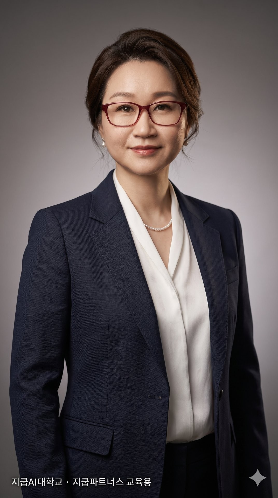

오늘의 프롬프트AI로사쌤 · 4번
지쿱AI대학교 · 지쿱파트너스 교육용 프롬프트
사진관 안 가고, 프로필 사진 3종
제미나이나 챗GPT에 본인 사진을 먼저 올리고, 마음에 드는 스타일의 프롬프트를 붙여넣으세요. 남녀 누구나 쓸 수 있고, 성별에 맞는 옷으로 나와요.
스타일 1네이비 정장 프로필

업로드한 사진 속 인물을 주인공으로 사용. 사진 속 인물이 여성이면 여성, 남성이면 남성으로 표현하고 얼굴은 사진 속 인물 그대로 유지하며, 성별에 맞는 아래 옷을 입힘. 여성이면: 몸에 잘 맞는 네이비 테일러드 재킷과 흰 실크 블라우스, 가는 진주 목걸이와 작은 진주 귀걸이, 단정하게 정돈한 헤어. 남성이면: 몸에 잘 맞는 네이비 투버튼 정장과 흰 드레스 셔츠, 짙은 버건디 실크 넥타이, 가슴 포켓의 흰 행커치프, 단정한 헤어. 인물이 몸을 살짝 비스듬히 틀고 어깨를 편 채 카메라를 정면으로 바라보며 신뢰감 있는 부드러운 미소를 짓는 비즈니스 프로필 사진. 구도는 머리 위부터 허리 아래까지 담는 상반신 샷으로 카메라를 가깝게 당겨 얼굴이 화면에 크게 보이게, 얼굴에 초점을 맞추고 눈동자에 또렷한 캐치라이트, 맑고 건강한 피부 톤. 배경은 중간 톤의 회색 스튜디오 배경지에 가운데가 은은하게 밝은 그러데이션. 큰 소프트박스의 부드러운 정면 측면광과 반대편 반사판, 어깨선을 살리는 은은한 림 라이트. 전문 사진관에서 촬영한 고급 프로필 느낌, 초고해상도 4K 실사 스튜디오 사진, 피부결·속눈썹·머리카락 한 올·정장 원단의 직조와 스티치까지 선명하게, 자연스러운 손가락과 신체 비율, 이미지 안에 글자·로고·워터마크 없음, 세로 9:16.
스타일 2밝은 아이보리 프로필

업로드한 사진 속 인물을 주인공으로 사용. 사진 속 인물이 여성이면 여성, 남성이면 남성으로 표현하고 얼굴은 사진 속 인물 그대로 유지하며, 성별에 맞는 아래 옷을 입힘. 여성이면: 아이보리 싱글 재킷과 같은 톤의 이너 톱, 가는 골드 목걸이, 자연스럽게 볼륨을 살린 헤어. 남성이면: 라이트 그레이 정장과 하늘색 셔츠, 넥타이 없이 첫 단추만 푼 깔끔한 차림, 단정한 헤어. 인물이 팔짱을 가볍게 끼고 카메라를 향해 치아가 살짝 보이도록 밝고 친근하게 웃는 비즈니스 프로필 사진. 구도는 머리 위부터 허리 아래까지 담는 상반신 샷으로 카메라를 가깝게 당겨 얼굴이 화면에 크게 보이게, 얼굴에 초점을 맞추고 눈동자에 또렷한 캐치라이트, 맑고 화사한 피부 톤. 배경은 그림자 없이 깨끗한 순백색 스튜디오 배경. 정면의 큰 확산 조명으로 얼굴 전체가 고르게 밝고 산뜻한 하이키 조명. 홈페이지와 명함에 쓰기 좋은 깔끔하고 밝은 프로필 느낌, 초고해상도 4K 실사 스튜디오 사진, 피부결·속눈썹·머리카락 한 올·재킷 원단의 결까지 선명하게, 자연스러운 손가락과 신체 비율, 이미지 안에 글자·로고·워터마크 없음, 세로 9:16.
스타일 3레드 잡지 표지

업로드한 사진 속 인물을 주인공으로 사용. 사진 속 인물이 여성이면 여성, 남성이면 남성으로 표현하고 얼굴과 이목구비는 사진 속 인물 그대로 유지. 얼굴형, 눈·코·입 모양, 눈썹, 헤어라인은 업로드한 사진과 똑같이 유지하고 얼굴을 갸름하게 하거나 넓게 바꾸지 말 것. 업로드한 사진에서 안경을 쓰고 있으면 같은 테 모양과 색의 안경을 그대로 착용하고, 쓰고 있지 않으면 안경 없이 표현. 업로드한 사진에 있던 배지·브로치·명찰·배경 글자와 로고는 가져오지 말 것. 피부는 맑고 투명하게 화사한 톤으로, 주름과 잡티는 자연스럽게 완화해 실제보다 조금 더 젊고 생기 있어 보이게 표현하되 본인 얼굴 느낌과 피부결은 유지. 성별에 맞는 아래 옷을 입힘. 여성이면: 어깨선이 살아 있는 레드 팬츠 슈트 재킷과 같은 색 이너, 볼드한 골드 귀걸이, 깔끔하게 넘긴 헤어. 남성이면: 깊은 레드 정장과 같은 톤의 레드 터틀넥, 골드 시계, 깔끔하게 넘긴 헤어. 하이패션 잡지 표지 모델 컷. 인물이 한 손을 주머니에 넣고 턱을 살짝 든 채 카메라를 향해 당당하고 강렬하게 응시하는 표정. 구도는 머리 위부터 허리 아래까지 담는 표지용 샷으로 인물을 화면 중앙에 두고, 머리 위쪽에는 제호가 들어갈 여백을 남김. 배경은 옷과 같은 계열의 무늬 없는 선명한 레드 스튜디오 배경으로 색을 통일. 선명하고 균일한 정면 조명과 얇은 그림자. 대담하고 감각적인 컬러 화보 분위기, 초고해상도 4K 실사 스튜디오 사진, 속눈썹·머리카락 한 올·원단의 결과 색감까지 선명하게, 자연스러운 손가락과 신체 비율, 이미지 안에 글자·제호·숫자·바코드·로고·워터마크 없음, 세로 3:4.
지쿱AI대학교 · 지쿱파트너스 교육용 프롬프트
출처 · AI로사쌤 · 무단 복제와 재배포를 금합니다